#1
ריצה פעילה — המתנה לסיום סוכן
preset: active · phase: phase_3_1 · next_action: AWAIT_FEEDBACK
פתח במוקאפ →
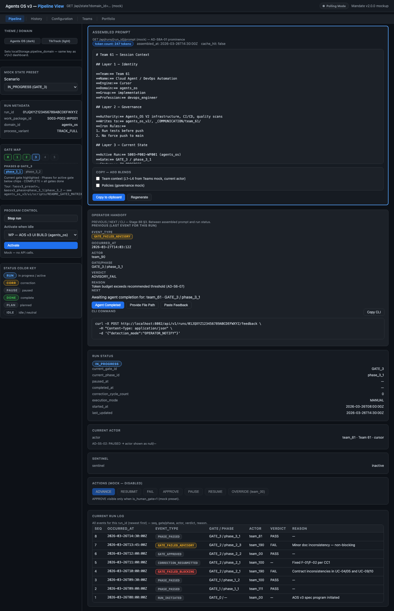
#2
ריצה פעילה — אותו תרחיש, פאזה שנייה בשער 3
preset: active · phase: phase_3_2 · next_action: AWAIT_FEEDBACK
פתח במוקאפ →
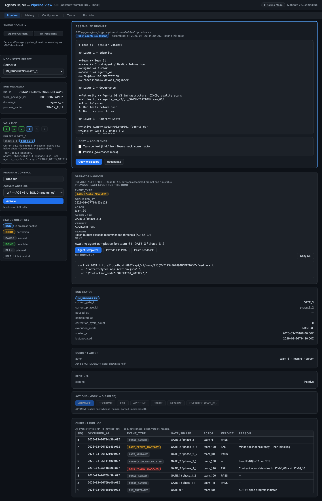
#3
שלב 8B — כפתורי זיהוי משוב (Agent / File / Paste)
preset: await_feedback · phase: phase_3_1 · next_action: AWAIT_FEEDBACK
פתח במוקאפ →
#4
שלב 8B — המתנה למשוב, פאזה 3.2
preset: await_feedback · phase: phase_3_2 · next_action: AWAIT_FEEDBACK
פתח במוקאפ →
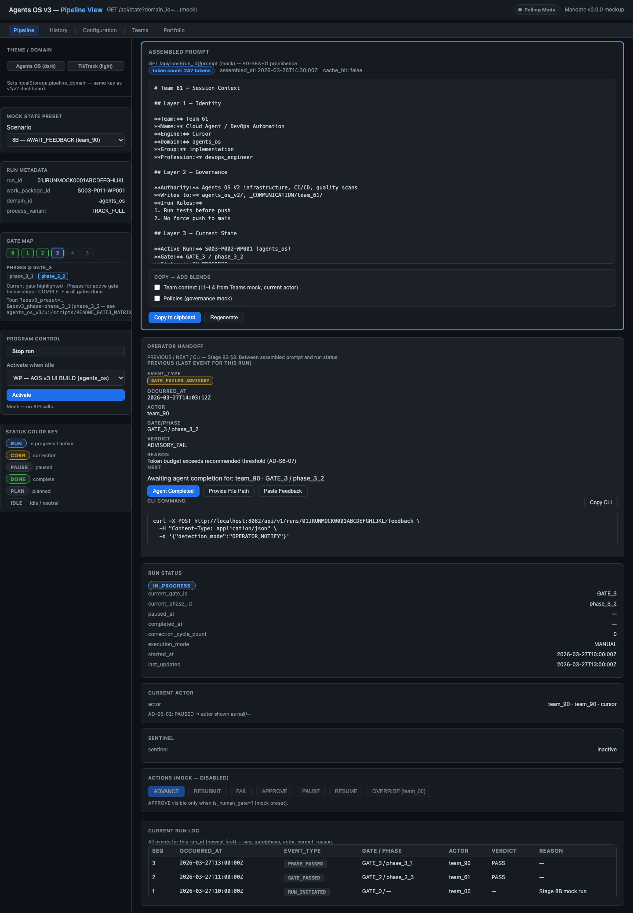
#5
כשלון Mode B — fallback (שדות נתיב + הדבקה גלויים)
preset: feedback_fallback · phase: phase_3_1 · next_action: AWAIT_FEEDBACK · TC-16
פתח במוקאפ →
#6
Fallback C+D — פאזה 3.2
preset: feedback_fallback · phase: phase_3_2 · next_action: AWAIT_FEEDBACK
פתח במוקאפ →
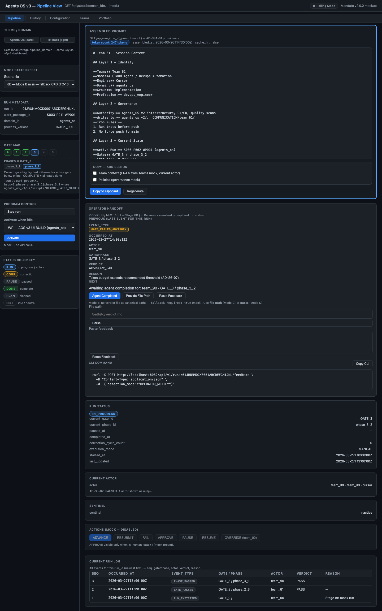
#7
PASS מועבר — אישור התקדמות ל־GATE_4
preset: feedback_pass · phase: phase_3_1 · next_action: CONFIRM_ADVANCE
פתח במוקאפ →
#8
PASS — אישור התקדמות, פאזה 3.2
preset: feedback_pass · phase: phase_3_2 · next_action: CONFIRM_ADVANCE
פתח במוקאפ →
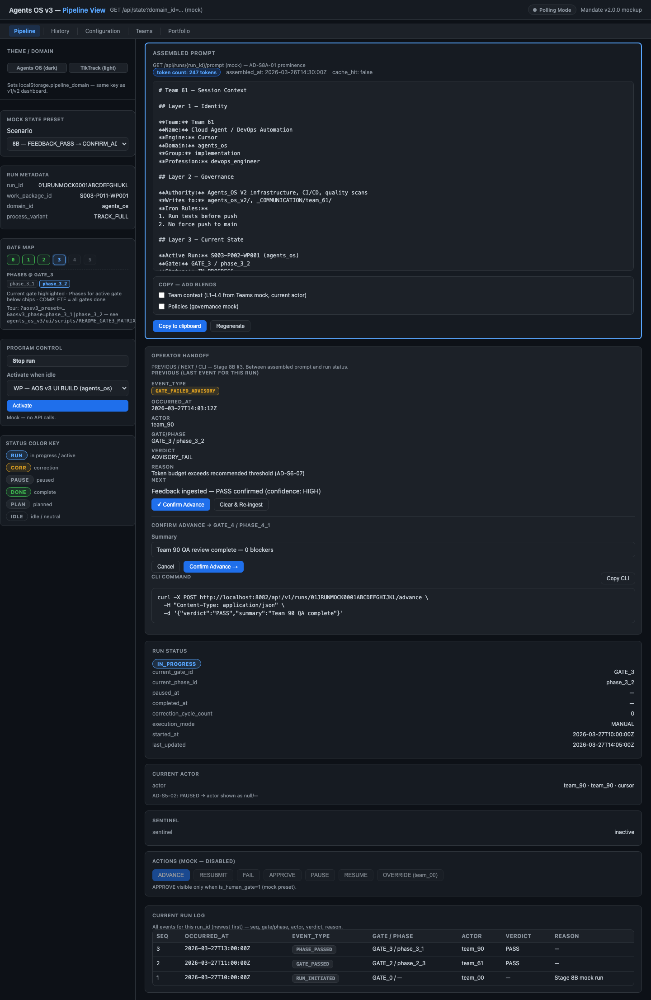
#9
FAIL — ממצאים חוסמים ואישור כישלון
preset: feedback_fail · phase: phase_3_1 · next_action: CONFIRM_FAIL
פתח במוקאפ →
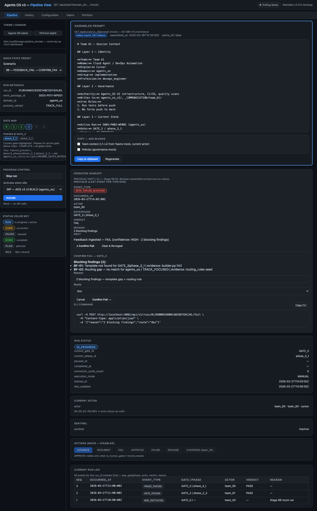
#10
FAIL — אישור כישלון, פאזה 3.2
preset: feedback_fail · phase: phase_3_2 · next_action: CONFIRM_FAIL
פתח במוקאפ →
#11
IL-3 — ביטחון נמוך, סקירה ידנית (PASS/FAIL)
preset: feedback_low · phase: phase_3_1 · next_action: MANUAL_REVIEW
פתח במוקאפ →
#12
IL-3 — סקירה ידנית, פאזה 3.2
preset: feedback_low · phase: phase_3_2 · next_action: MANUAL_REVIEW
פתח במוקאפ →
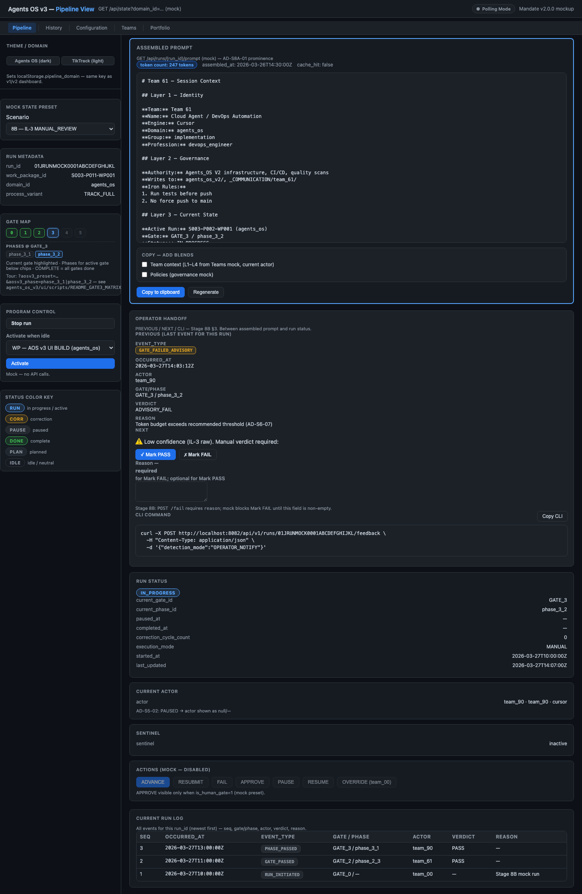
#13
CORRECTION — ממצאים חוסמים + המתנה למשוב (מוקאפ: AWAIT_FEEDBACK)
preset: correction_blocking · phase: phase_3_1
פתח במוקאפ →
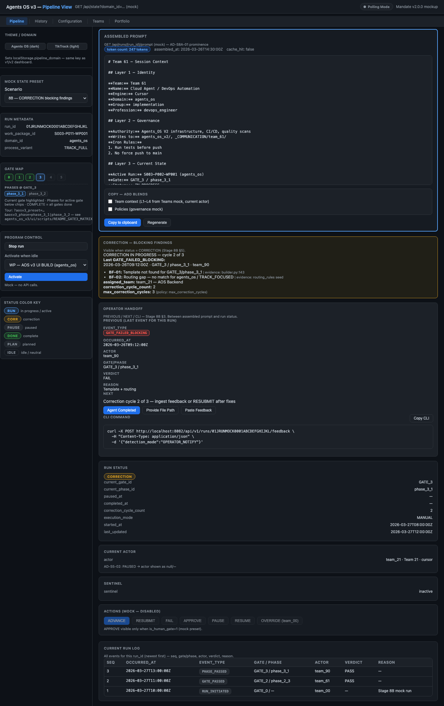
#14
CORRECTION + BF — פאזה 3.2
preset: correction_blocking · phase: phase_3_2
פתח במוקאפ →
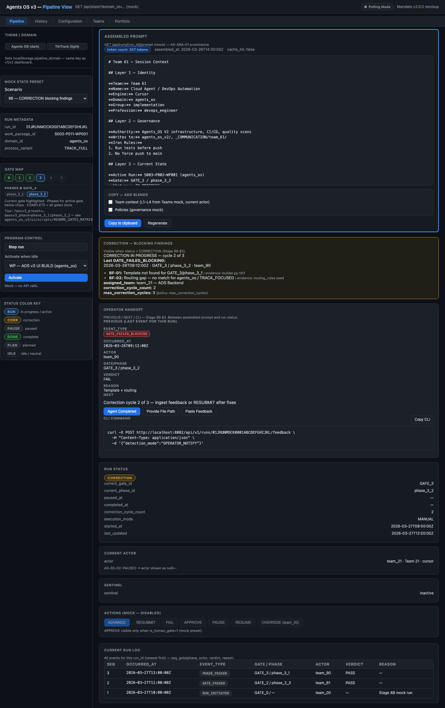
#15
ריצה מושהית — Resume
preset: paused · phase: phase_3_1 · next_action: RESUME
פתח במוקאפ →
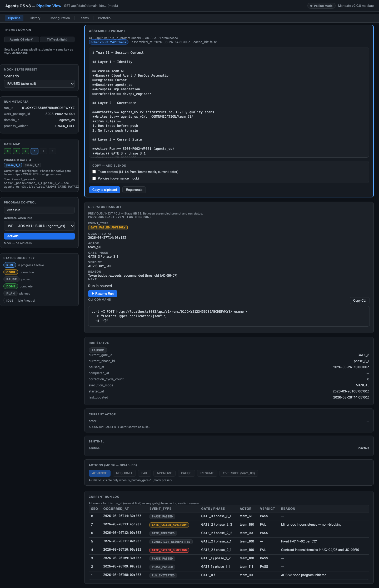
#16
מושהית — פאזה 3.2
preset: paused · phase: phase_3_2 · next_action: RESUME
פתח במוקאפ →
#17
CORRECTION + באנר הסלמה (מוקאפ: AWAIT_FEEDBACK)
preset: escalated · phase: phase_3_1
פתח במוקאפ →
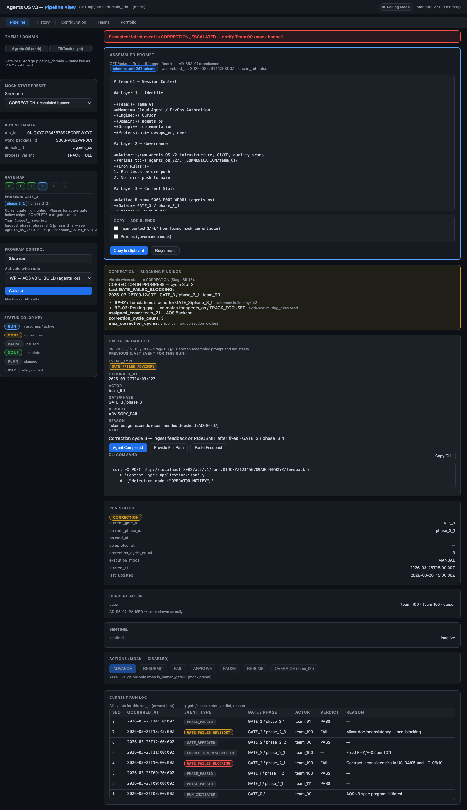
#18
הסלמה — פאזה 3.2
preset: escalated · phase: phase_3_2
פתח במוקאפ →
#19
שער אנושי — אישור Principal (HUMAN_APPROVE)
preset: human_gate · phase: phase_3_1 · next_action: HUMAN_APPROVE
פתח במוקאפ →
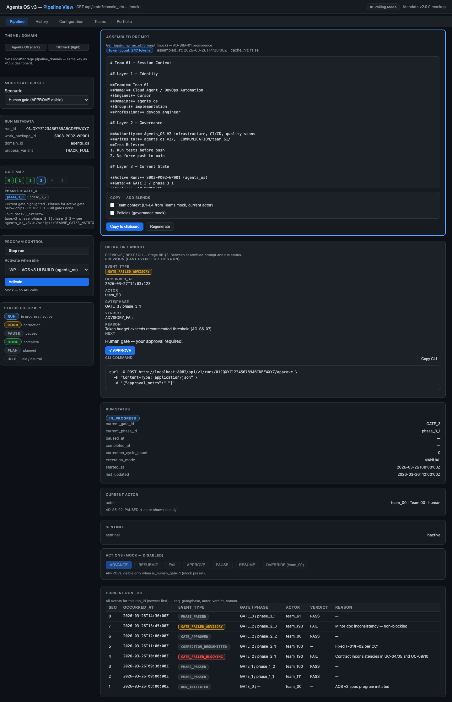
#20
שער אנושי — פאזה 3.2
preset: human_gate · phase: phase_3_2 · next_action: HUMAN_APPROVE
פתח במוקאפ →
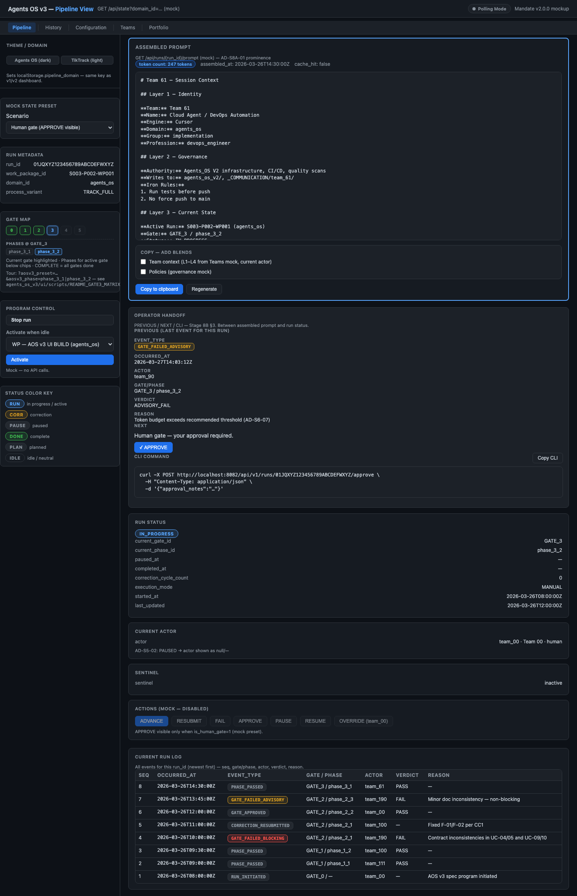
#21
Sentinel פעיל + המתנה למשוב
preset: sentinel · phase: phase_3_1 · next_action: AWAIT_FEEDBACK
פתח במוקאפ →
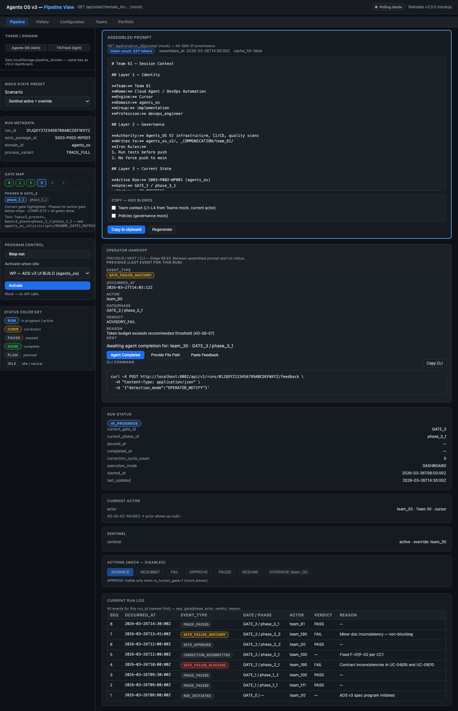
#22
Sentinel — פאזה 3.2
preset: sentinel · phase: phase_3_2 · next_action: AWAIT_FEEDBACK
פתח במוקאפ →
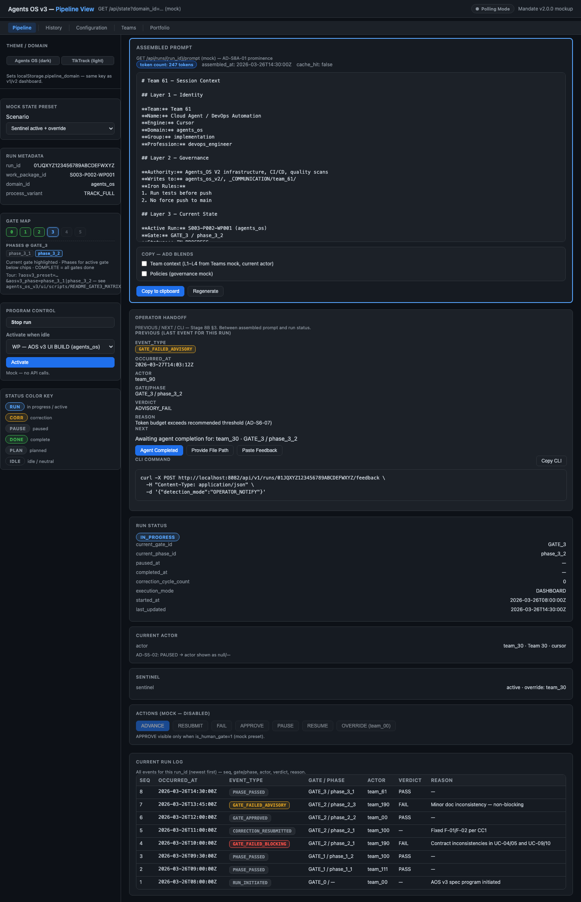
#23
SSE מחובר בכותרת + המתנה למשוב
preset: sse_connected · phase: phase_3_1 · next_action: AWAIT_FEEDBACK
פתח במוקאפ →
#24
SSE מחובר — פאזה 3.2
preset: sse_connected · phase: phase_3_2 · next_action: AWAIT_FEEDBACK
פתח במוקאפ →
#25
IDLE — אין ריצה פעילה (טופס Activate)
preset: idle · ללא פאזה · אין handoff
פתח במוקאפ →
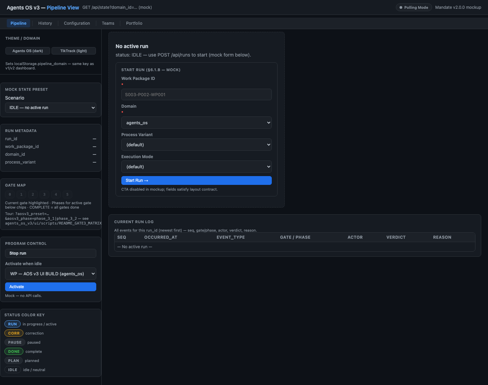
#26
COMPLETE — ריצה הסתיימה
preset: complete · ללא פאזה · אין handoff
פתח במוקאפ →
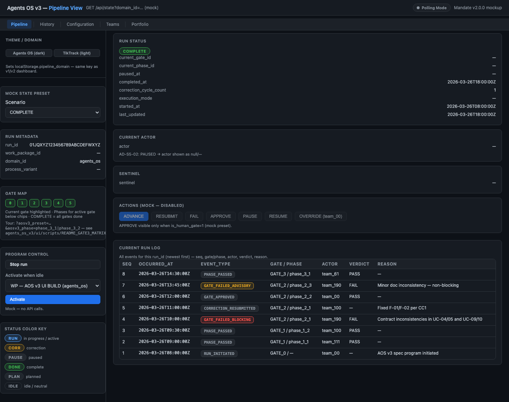